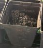
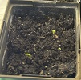
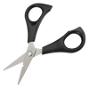
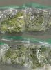
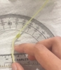
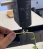
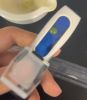

Step |
Description |
Image |
|---|---|---|
1 |
Set up the pots and fill each with the same amount of soil |
 |
2 |
Insert 3 Dwarf Gray Sugar Pea Plant seeds into each pot |
 |
3 |
Maintain plants for 7 weeks (Water and decapitate when needed) |
 |
4 |
Remove all of the plants and store them in bags in a fridge |
 |
5 |
Measure the maximum bend angle for all plants using a protractor |
 |
6 |
Measure the breaking force for half of the plants |
 |
7 |
Measure the sucrose levels for the rest of the plants |
 |